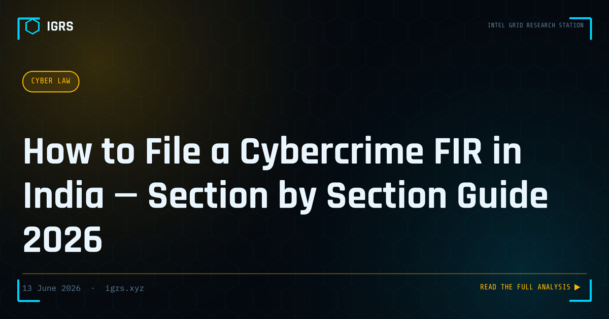

How to File a Cybercrime FIR in India — Section by Section Guide 2026
Filing a cybercrime FIR correctly is critical — incorrect sections lead to bail being granted easily, evidence being inadmissible, or cases being quashed. With the Bharatiya Nyaya Sanhita (BNS) 2023 replacing the IPC, Bharatiya Nagarik Suraksha Sanhita (BNSS) replacing CrPC, and Bharatiya Sakshya Adhiniyam (BSA) replacing the Evidence Act, investigators must update their knowledge for 2026 proceedings.
Step 1 — Where to File
- Online: cybercrime.gov.in — mandatory first step for financial fraud
- Local police station: Cyber cell or nearest PS — territorial jurisdiction
- State cyber police: For complex cases involving multiple states
- CBI cyber: For cases involving public servants or crossing ₹1 crore
Cybercrime jurisdiction is flexible — the FIR can be filed where the victim is located, where the server is located, or where the offender is located (Section 13, BNSS 2023).
Step 2 — Evidence to Collect Before Filing
- Screenshots of all communications (WhatsApp, email, SMS) with timestamp visible
- Bank statements showing fraudulent transactions with UTR numbers
- Phone numbers, UPI IDs, email addresses of suspect
- Any URLs, domain names, or IP addresses involved
- Any physical documents (fake ID cards shown, courier receipts)
Step 3 — Correct Sections by Offence Type
UPI/Online Banking Fraud
| Section | Act | Element |
|---|---|---|
| S. 318 | BNS 2023 | Cheating |
| S. 66C | IT Act 2000 | Identity theft |
| S. 66D | IT Act 2000 | Cheating by personation using computer |
Social Media Abuse / Defamation
| Section | Act | Element |
|---|---|---|
| S. 66A* | IT Act 2000 | *Struck down by SC — do not use |
| S. 353 | BNS 2023 | Defamation |
| S. 67 | IT Act 2000 | Publishing obscene material online |
| S. 67A | IT Act 2000 | Publishing sexually explicit material |
Hacking / Unauthorised Access
| Section | Act | Element |
|---|---|---|
| S. 66 | IT Act 2000 | Computer related offences (hacking) |
| S. 43 | IT Act 2000 | Penalty for damage to computer (civil) |
| S. 308 | BNS 2023 | Extortion (for ransomware) |
Digital Arrest / Impersonation
| Section | Act | Element |
|---|---|---|
| S. 170 | BNS 2023 | Impersonating a public servant |
| S. 308 | BNS 2023 | Extortion |
| S. 319 | BNS 2023 | Cheating by personation |
| S. 66D | IT Act 2000 | Cheating by personation using computer |
Step 4 — Critical Mistakes to Avoid
- Do NOT use Section 66A IT Act — struck down by Supreme Court in Shreya Singhal vs Union of India (2015)
- Do NOT use old IPC sections for offences after 1 July 2024 — BNS applies
- Always include IT Act sections alongside BNS — cyber offences need both
- Preserve evidence before filing — social media posts get deleted, accounts vanish
- Hash all digital evidence (SHA-256) before submission — Section 63 BSA 2023
Step 5 — Evidence Admissibility under BSA 2023
Section 63 of Bharatiya Sakshya Adhiniyam 2023 governs electronic evidence. For digital evidence to be admissible:
- A Section 63 BSA certificate must accompany the evidence
- The certificate must be signed by a person in charge of the device/system
- The certificate must state the hash value of the electronic record
- The device must have been functioning properly at the time of recording
Escalation Path
If local PS refuses to register FIR: File application before SP/Commissioner → If still refused: File complaint before Magistrate under Section 175 BNSS → If online fraud above ₹1 lakh: Directly approach State Cyber Police.